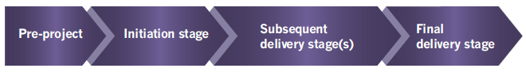

This chapter acts as a brief summary of how PRINCE2 would typically look when working in an agile
way. The best way to tailor PRINCE2 depends on the project context, and the purpose of this chapter
is to illustrate examples that would be common in many situations; however, many other alternatives
exist. The chapter illustrates a way but not the way.
PRINCE2 provides a process model for managing a project (see Figure 4.1). The processes can easily be
scaled and tailored to suit the requirements of all types of project. They consist of a set of
activities that are required to direct, manage and deliver a project.
4.1 PRE-PROJECT AND THE INITIATION STAGE
4.1.1 Pre-project
In the beginning, someone has an idea or a need. This may result from new business objectives,
responding to competitive pressures, changes in legislation, or a recommendation in a report or an
audit. The trigger for the project could be almost anything. In PRINCE2, this trigger is called a
project mandate. The project mandate is provided by the commissioning organization (corporate or
programme management) and can vary in form from a verbal instruction to a well-defined and justified
project definition.
Prior to the activity to scope the project appropriately, it is important to verify that the project
is worthwhile and viable. Such activities are covered by the process Starting up a Project, which
culminates in the production of a project brief and a stage plan for project initiation. The project
board reviews the project brief and decides whether to initiate the project, and states the levels
of authority to be delegated to the project manager for the initiation stage.
4.1.2 Initiation stage
Once there is a decision to go ahead with the project, it needs to be planned in sufficient detail.
Funding needs to be obtained and controls should be defined to ensure that the project proceeds in
accordance with the wishes of those people paying for the project and those who will make use of
what the project delivers. The planning, establishment of the project management strategies and
controls, development of a robust business case, and a means of reviewing benefits are covered by
the Initiating a Project process. Also, during the initiation stage, the Managing a Stage Boundary
process is used to plan the next stage. The initiation stage culminates in the production of the
project initiation documentation, which is reviewed by the project board to decide whether to
authorize the project. As the contents of the project initiation documentation are likely to change
throughout the project, this version of the project initiation documentation is preserved as input
for later performance reviews.
4.1.3 How pre-project and the initiation stage would typically look when using agile
4.1.3.1 Plan, monitor and control
Project-level planning focuses on sets of features and intended releases.
There is strong engagement from all levels of the project management team in the planning and
estimation activities.

Fig 04-001 The life of a PRINCE2 project
Stage-level planning is carried out collaboratively with the customer in order to most
accurately meet their needs and achieve the most benefit.
Plans are timeboxed in some form – this could be in the form of a specific time interval (e.g.
two-weekly) or it could be flow-based over a longer period – and these plans would be created at
a time (i.e. ‘just in time’) and a level of detail that is appropriate to allow for
uncertainties.
Definition: Feature A generic term that is widely used to describe something a product does,
or the way in which a product does something. A feature can be at any level of detail (e.g. it
is waterproof, it makes a tone when switched off) and can be related to a specific requirement,
user story or epic. Another similar term is ‘function’.
4.1.3.2 Behaviour
The use of self-organizing teams and people-centric values such as empowerment may be explicitly
defined as part of the project approach.
Mandating or recommending the use of specific agile approaches such as Scrum and/or Kanban may
be explicitly defined as part of the project approach.
The project initiation documentation may have been created collaboratively in a workshop in
order to disseminate information to the project team quickly and more accurately and with a high
level of engagement and ownership.
4.1.3.3 Process
Information on what constitutes a minimum viable product (MVP) is defined (see section
20.4.2.5).
The trigger for the project may have come from a product roadmap.
There may be an indication of the appropriate use of agile for the project.
4.1.3.4 Products
The project product description is likely to have been defined to show which requirements are
mandatory and which are not.
The project product description purpose is likely to be outcome-based (focusing on the delivery
of value) as opposed to the delivery of a specific solution.
Product descriptions have initially been captured using user stories (or as epics), although it
will be expected that more will be discovered throughout this phase and beyond.
The business case is defined in a flexible way to allow for the amount of what is being
delivered (and its value) to change to a degree during the project.
The benefits review plan focuses on how to deliver value regularly and as early as possible.
This will involve describing what products will be delivered when, and what value will be
enabled.
The project initiation documentation is likely to be a less formal document, as some of the
baseline information is visible in the form of an information radiator (see section 15.4.2).
The project initiation documentation will be less detailed in certain sections (e.g. product
descriptions), since the solution is not necessarily defined at the start. It is a living
document that evolves, although it will still need to be baselined.
Definition: User story A tool used to write a requirement in the form of who, what and why.
Definition: Epic A high-level definition of a requirement that has not yet been sufficiently
refined or understood. Eventually, an epic will be refined and broken down into several user
stories/requirements.
Definition: Information radiator A general term used to describe the use of walls or boards
containing information that can be readily accessed by people working on the project. It can
contain any information, although it would typically show such things as work to do and how work
is progressing.
4.2 SUBSEQUENT DELIVERY STAGES
The project board delegates day-to-day control to the project manager on a stage-by-stage basis. The
project manager needs to assign work to be done, ensure that the outputs of such work (products)
meet relevant specifications, and gain suitable approval where appropriate. The project manager also
needs to ensure that progress is in line with the approved plan and that the forecasts for the
project’s performance targets are within agreed tolerances. The project manager ensures that a set
of project records (daily log, lessons log, issue register, risk register, quality register and
configuration item records) are maintained to assist with progress control. The project manager
informs the project board of progress through regular highlight reports. The activities to control
each stage are covered by the Controlling a Stage process.
In the Managing Product Delivery process, the team manager(s) or team members execute assigned work
packages (that will deliver one or more products) and keep the project manager appraised of progress
via checkpoint reports.
4.2.1 How subsequent delivery stages would typically look when using agile
4.2.1.1 Plan, monitor and control
Work assignment throughout the stage is carried out collaboratively and in conjunction with the
customer in order to address the customer’s needs. This is likely to take the form of the
delivery teams collectively selecting their own work (and collaboratively creating
customer-focused work packages) as part of the agile concept of self-organization. The focus
would be to work iteratively and deliver incrementally.
High levels of trust and transparency mean that work packages are defined informally even though
they represent a vital component when using PRINCE2 with agile.
Self-organizing teams are responding rapidly to change, although this will be within
well-understood boundaries in order to ensure the accuracy of the products being delivered.
Progress is being measured by work completed and is visualized on a burn chart.
Progress is supported by the use of reviews and demonstrations (‘demos’) by the project
management team and the delivery teams in association with the customer.
Tracking of time and cost still takes place but it is less prominent than the tracking of
features and/or work completed. This is because time and cost are more predictable due to
working with fixed timescales and stable teams.
Scope and quality criteria are the primary focus of any tolerances used.
Definition: Burn chart A technique for showing progress (e.g. such as with a timebox) where
work that is completed and work still to be done are shown with one or more lines: this is
updated regularly/daily.
4.2.1.2 Behaviour
During Managing a Stage Boundary the key baseline information that needs to be updated focuses on
what has been delivered, the benefits realized and the level of change taking place.
4.2.1.3 Process
If an exception arises it is most likely to have occurred due to the amount being delivered being
forecast to go outside the agreed tolerance level, as opposed to other aspects being forecast to
exceed tolerance, such as time and cost.
4.2.1.4 Products
Quality tolerances in product descriptions are written in such a way as to allow for change
without compromising the product’s purpose (e.g. there are levels of tolerance that can be
prioritized).
There is less formality for logs at both the project management and delivery levels
(particularly the latter) – a risk log may exist on a whiteboard, or an issue could be shown as
a sticky note on a Kanban board.
Definition: Kanban board A tool used in Kanban to visually display the work in the system
(or timebox). It is usually made up of a series of columns and possibly rows where work items
move from left to right as they move through various states in order to be completed.
Highlight reporting is low-tech and primarily focuses on how much is being delivered – this
could take the form of an information radiator where information is pulled by the project board
without the need for the project manager to report at an agreed frequency.
Checkpoint reports are likely to be informal and appear on an information radiator where
information is pulled – or they could be replaced altogether by stand-up meetings if the
delivery teams were happy for the project manager to be in attendance.
Definition: Stand-up meeting A short meeting to assess progress. Typically lasting 15
minutes or less, they involve describing work that has been done, work still to be done and any
problems being encountered.
4.3 FINAL DELIVERY STAGE
As a project is a temporary undertaking, during the final stage (once the project manager has gained
approval for all of the project’s products) it is time to decommission the project. The project
board needs to be satisfied that the recipients of the project’s products are in a position to own
and use them on an ongoing basis. Should this be the case, the products can be transitioned into
operational use and the project can close. The project documentation should be tidied up and
archived, the project should be assessed for performance against its original plan and the resources
assigned to the project need to be released. The closure activities include planning post-project
benefits reviews to take place for those benefits that can only be assessed after the products have
been in use (and therefore after the project has closed). The activities to decommission a project
are covered by the Closing a Project process.
4.3.1 How the final delivery stage would typically look when using agile
4.3.1.1 Plan, monitor and control
When formal checks are made against the project baseline defined in the project initiation
documentation, the key aspects that are assessed include the amount that was delivered, what extra
was delivered and what was removed. This will have been happening continually throughout the project
as the teams work iteratively and respond to feedback.
4.3.1.2 Behaviour
Some of the products that the project intended to deliver may not have been created and may have
been replaced by others that were not part of the original plan. This will have been
communicated throughout the project and will not come as a surprise to the project board when
they authorize project closure.
The customer is already in ownership of several products that have transitioned into operational
use and is now realizing benefits.
Tidying up and archiving is a routine task by this point, as it has been taking place regularly
throughout the project; its value is known to everyone and it is not seen as simply a
bureaucratic task.
4.3.1.3 Process
Closing and decommissioning a project is not a significant event as it is a case of ‘tidying up’
and finishing off many activities to do with lessons, archiving and handover which have already
been started because by this point several releases have taken place.
Project closure involves (or is held as) a retrospective.
There is an assessment of how appropriate the use of agile turned out to be to help with
guidance on the use of agile for future projects.
Outstanding work still exists on backlogs of some kind (e.g. a release backlog), and this is
then moved to other backlogs (e.g. an existing BAU backlog), discarded or archived.
Definition: Retrospective A regular event that looks at how the process of doing work can be
improved. In keeping with the agile concept of ‘inspect and adapt’ these events help teams to
continually improve their working practices, little by little, over time.
4.3.1.4 Products
Lessons may be handed to project support informally, or project support may have been included in
retrospectives if the teams were happy for them to be in attendance.
Definition: Backlog A list of new features for a product. The list may be made up of user
stories which are structured in a way that describes who wants the features and why.